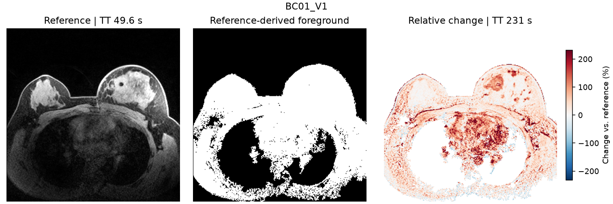

每次检查提取中央轴位切片，按物理坐标在每个时间帧找到同一层。一个样本就是 [时间, 行, 列] 的数组。

相对信号变化 = 100 × (当前信号 − 首帧信号) / 首帧信号。首帧会保留为输入，且这里尚未验证它是否为注射前影像。 前景是从首帧信号估计的区域。它不提供病灶定位，本阶段也没有做运动配准。
| 样本 | 切片编号 | 时间帧 | 首帧 TT (s) | 前景像素 |
|---|---|---|---|---|
| BC01_V1 | 64 | 28 | 49.6 | 47825 |
| BC01_V2 | 64 | 28 | 49.6 | 46527 |
| BC05_V1 | 60 | 32 | 44.8 | 43040 |
| BC05_V2 | 60 | 32 | 44.8 | 42911 |
| BC06_V1 | 60 | 32 | 44.8 | 53781 |
| BC06_V2 | 60 | 32 | 44.8 | 57480 |
| BC08_V1 | 60 | 32 | 44.8 | 48303 |
| BC08_V2 | 60 | 32 | 44.8 | 48632 |
| BC10_V1 | 60 | 32 | 44.8 | 46405 |
| BC10_V2 | 60 | 32 | 44.8 | 38348 |
| BC12_V1 | 60 | 32 | 44.8 | 61636 |
| BC12_V2 | 60 | 32 | 44.8 | 59463 |
| BC13_V1 | 60 | 32 | 44.8 | 43632 |
| BC13_V2 | 60 | 32 | 44.8 | 41141 |
| BC14_V1 | 60 | 32 | 44.8 | 44890 |
| BC14_V2 | 60 | 32 | 44.8 | 42092 |
| BC15_V1 | 60 | 32 | 44.8 | 40242 |
| BC15_V2 | 60 | 32 | 44.8 | 41700 |
| BC16_V1 | 60 | 32 | 44.8 | 42377 |
| BC16_V2 | 60 | 32 | 44.8 | 40134 |